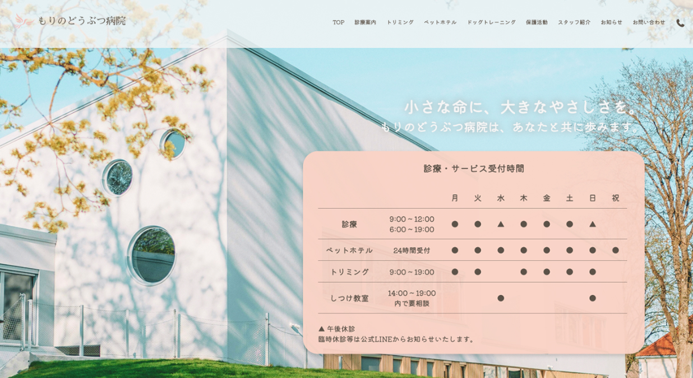
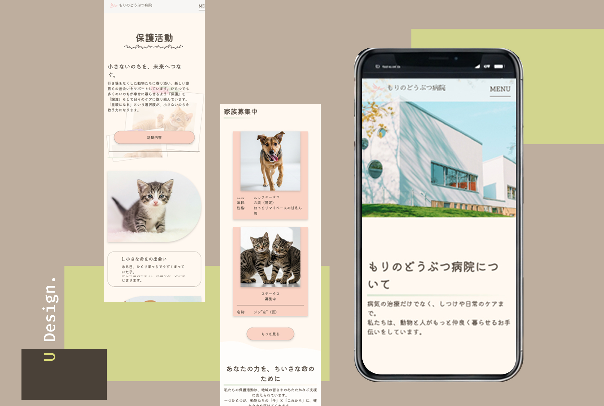
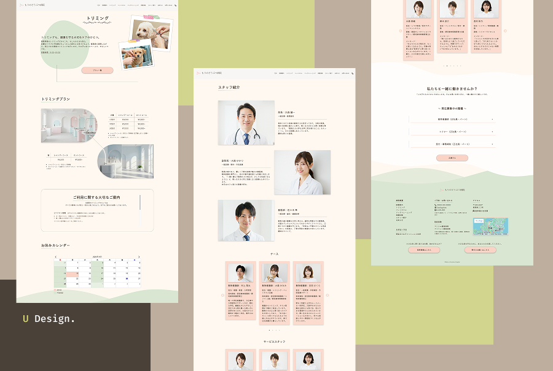

HP：もりのどうぶつ病院（架空サイト）
「安心」という目に見えない価値を、光と余白で形にする。言葉にできない不安を抱えて訪れる飼い主様の心に寄り添い、ページを開いた瞬間に「ここなら大丈夫」と感じていただける透明感のあるデザインを目指しました。

- _制作範囲
- Design / Coding / WordPress
- _使用ツール
- Figma / HTML / SCSS / JavaScript / WordPress
- _ターゲット
- 大切な家族（ペット）に寄り添う「かかりつけ医」を探している飼い主様
- _目的
- 病院が持つ「誠実さ」と「温かさ」を可視化し、初診の不安を安心へと変えること
- _デザインコンセプト
- 窓から差し込む光や木々の揺らぎをイメージし、彩度を抑えた柔らかなトーンで統一。病院という緊張感の出やすい場所だからこそ、ページを開いた瞬間に「ここなら安心して任せられる」と感じていただけるよう、十分な余白と繊細なタイポグラフィを用いて、心のゆとりを感じさせる設計を目指しました。
- _制作のポイント
- 緊急時や外出先からアクセスされる飼い主様のシチュエーションを想定し、診療案内やアクセスなどの重要情報への動線を最優先に構築しました。また、複雑になりがちな受付時間表をモバイルでも直感的に把握できるよう独自にコーディング。管理画面のカスタマイズにより、専門知識がなくても病院側でスムーズに情報更新ができる運用性にも注力しています。
